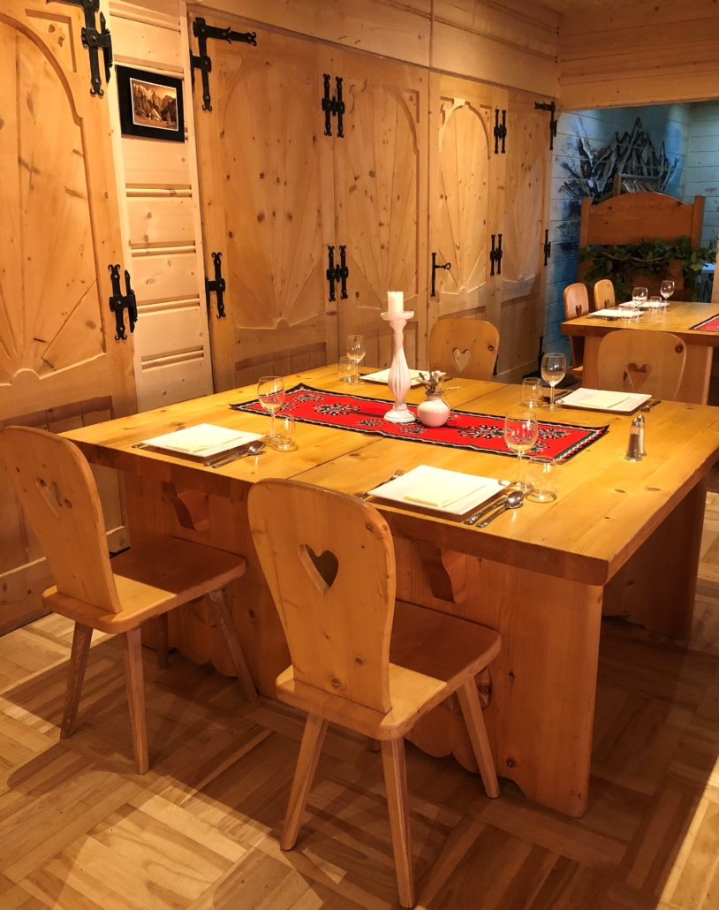
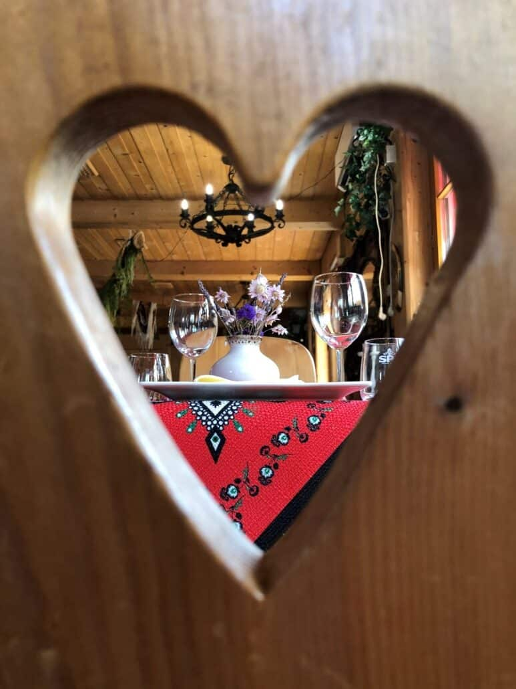
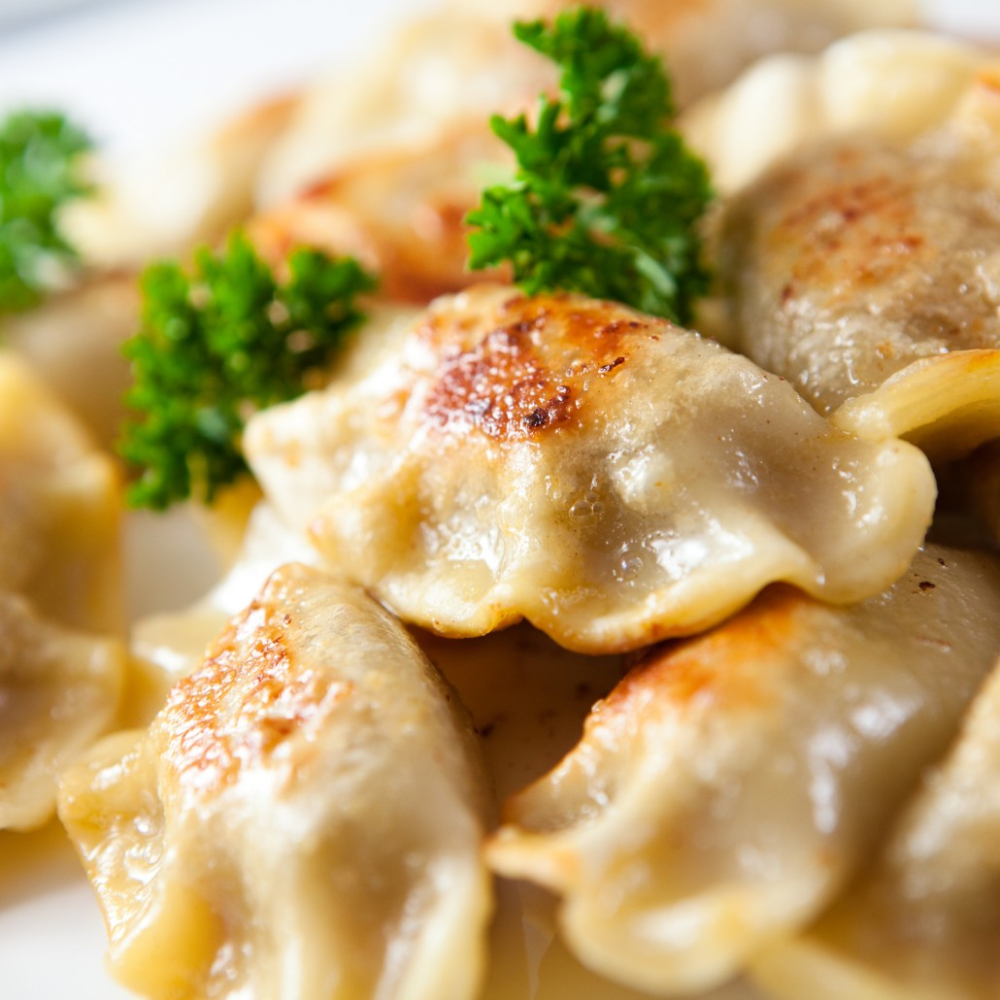
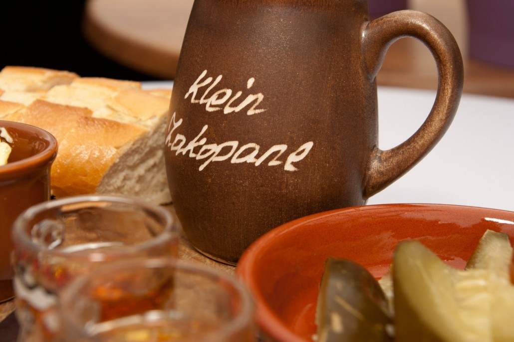
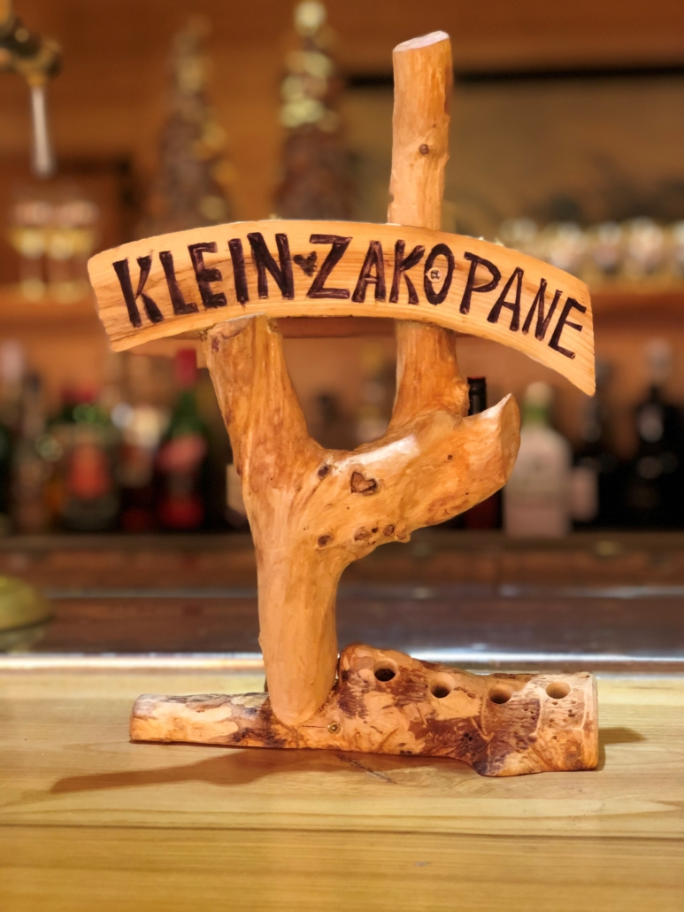
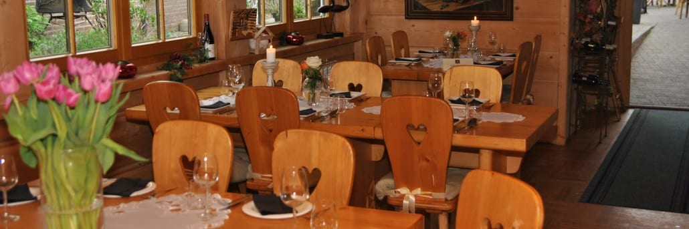

Rechtstreeks vanuit het Tatragebergte
Klein Zakopane
Poolse keuken in een houten zaal naar oude timmertraditie. Dumplings met de hand gemaakt, de open haard aan en bediening in klederdracht.
- Vrijdag
- vanaf 17.00
- Zaterdag
- vanaf 15.00
- Zondag
- vanaf 13.00


Poolse smaak, Poolse traditie
De keuken is gebaseerd op unieke recepten en de traditie van de oude Poolse keuken. Meelproducten zoals dumplings, noedels en pasta worden met de hand gemaakt door onze koks.
Iedereen is welkom, maar reserveer graag om teleurstelling te voorkomen.


Binnenkort bij Klein Zakopane
-
24dec
Kerstavond (Wigilia)
Reserveren voor Wigilia 2026 kan nu. U kiest uw plaats en betaalt veilig online.
Reserveer Kerstavond -
25& 26 dec
Eerste en tweede kerstdag gesloten
Op 25 en 26 december is het restaurant gesloten. Wigilia op 24 december gaat door op reservering.
-
31dec
Oud en Nieuw (Sylwester)
Inschrijvingen gesloten. Binnenkort volgt meer informatie. Verwachte prijs: circa € 170 per persoon.
Samen iets vieren
Een bijzondere dag verdient een plek waar iedereen zich welkom voelt. Vertel ons wat u wilt vieren, dan kijken we samen naar de mogelijkheden. Ongeacht de groepsgrootte: gastvrijheid en aandacht voor detail staan voorop.
Communie
Een feestelijke dag samen met familie en vrienden.
Doopfeest
Vier deze bijzondere gelegenheid met uw dierbaren.
Bedrijfsfeest
Een diner of feestelijke bijeenkomst voor uw team.
Bruiloft
Van een intiem diner tot een feest met familie en vrienden.

Uit passie, liefde en heimwee naar de bergen
Het restaurant is gebouwd volgens de oude timmertradities die typisch zijn voor het Tatragebergte. Het interieur, de open haard, de klanken van de muziek en de vriendelijke bediening in prachtige klederdracht zorgen ervoor dat u hier graag uw tijd doorbrengt, en graag terugkomt.
Gastvrouw Zosia is geboren en getogen in Zakopane en weet precies hoe ze die sfeer op haar gasten overbrengt. Het menu bestaat uit traditionele delicatessen, en zowel de keuken als de presentatie zijn in vertrouwde handen.
Over Zakopane
Zakopane, de geboortestad van uw gastvrouw, is een kleine stad in het zuiden van Polen in het Tatragebergte, ongeveer 100 km van Kraków, met 40.000 inwoners. Om te skiën in de winter en te wandelen in de zomer trekt de stad zo'n 6 miljoen toeristen per jaar. Prachtige houten huizen en kleurrijke Górale (bergmensen) in traditionele klederdracht geven de stad een unieke uitstraling: muziek op hun instrumenten, zang in kapelbands, en met paard en wagen of arrenslee heten zij u welkom. En natuurlijk zijn er de heerlijke gerechten uit de Poolse keuken.
Een prachtig stukje Polen in Gelderland.
Bekijk de film over het restaurant, De smaak van Polen, of de foodvlog die de Volkskrant bij ons maakte. Klein Zakopane is onderdeel van feestcentrum Hof van Giesbeek.
Wat gasten over ons schrijven
Gezellige sfeer en leuke inrichting in het restaurant. Vriendelijke bediening en goed en zeker genoeg te eten.
Heerlijk gegeten. Is het uur in de auto zeker de moeite waard! We zijn hier nu al een paar keer geweest en het was elke keer genieten.
Heerlijk beide Pools als Nederlandse gerechten, het was erg lekker, en je waant je echt in Zakopane.
Voedsel op een hoog niveau, goed gekozen kruidenadditieven. Niets meer, niets minder. En de service is erg aardig. Ik raad het echt aan.
Reserveren en contact
Wij zijn telefonisch bereikbaar voor alle gasten. Heeft u vragen, dan beantwoorden we die graag.
Openingstijden
- Vrijdag
- vanaf 17.00 uur
- Zaterdag
- vanaf 15.00 uur
- Zondag
- vanaf 13.00 uur
25 en 26 december gesloten.
Adres
Kerkstraat 55
6987 AB Giesbeek
Huisdieren
Binnen zijn huisdieren niet toegestaan. Op de veranda en het terras zijn ze welkom.
